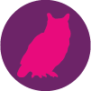

Return to My First Design Process

Next: Diving into Digital

Creating Spaces
I came to college thinking I would graduate an engineer, but instead will be graduating as a user-oriented interaction designer with a non-traditional engineering education. After being exposed to the user-oriented design process during the summer after my first year, I realized that this passion for tackling challenges was going to be best utilized as a designer, where I can think critically about the experience of the user and create experiences that are tailored to the user’s needs.